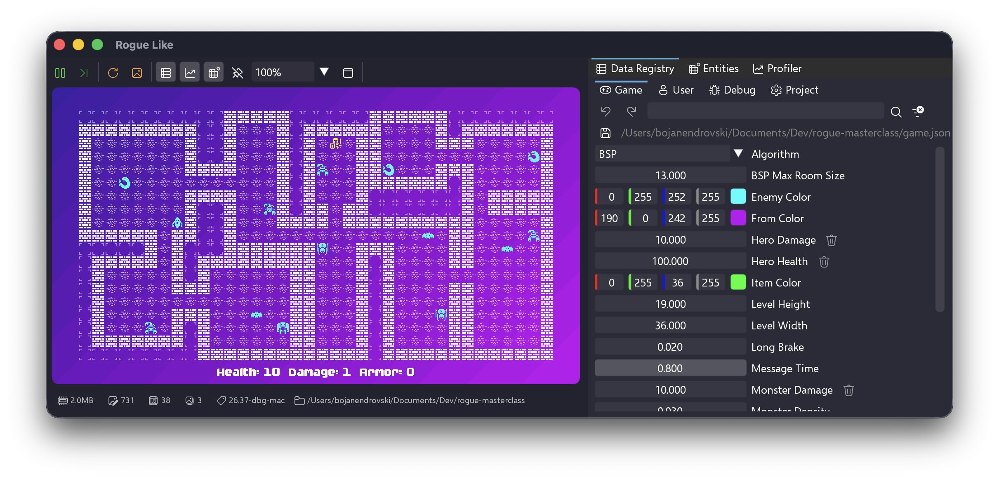

About xs
xs is an extra small, educational 2D game engine with Wren scripting. It's made with the goal of being the smallest game making tool possible. It used to teach introduction game engine programming at Breda University of Applied Sciences.
Wren Scripting
Uses the lightweight Wren scripting language - easy to learn, fast to run, hot-reloadable in microseconds
2D Graphics
Render pixel-perfect sprite graphics or sharp vector shapes
Entity-Component
Easy to use EC system for organizing your game logic
Audio Support
Super simple audio interface or state of art audio engine provided by the Fmod integration*
Multi-Platform
Build for PC, macOS, iOS, Nintendo Switch, and PlayStation 5
VS Code Extension
Integrated development with xs extension - visual editors, launch commands/buttons, and debug templates
Early Alpha: xs is early development. API may change from version to version. Some features might be missing or not be stable.
Fmod: Fmod integration is optional and requires a separate license from
Fmod. The basic audio system is free to use without Fmod.
What's Inside
- Core Engine: Written in C++ with focus on portability, simplicity and performance, it compiles in few seconds
- Wren VM: Embedded scripting with great error messages, with support for hot-reloading from the UI
- API Modules: Rendering, audio, input, math, file I/O, and more
- Minimal UI: Simple and intuitive user interface that gets out of your way and lets you express your creativity through code
- Sample Games: Learn from included examples
- Open Source: Crafted at Breda University of Applied Sciences and shared with the community
Quick Start
- Download the latest release from itch.io
- Run the file
xs.exe run samples/hello (or equivalent for your platform)
- Follow the Getting Started guide to create your first game
Ready to make games? Check out the Getting Started guide or browse the API Documentation.